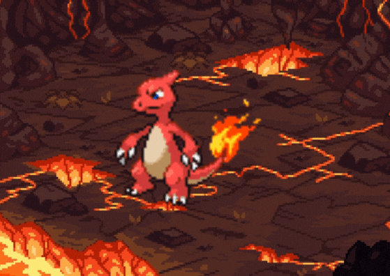

-
Bulbasaur #001
- Grama
- Veneno
Este pokémon nasceu de uma semente após sua mãe o plantar. O bulbo em suas costas compartilha uma relação simbiótica que da benéficio a ambos podendo absorver a energia solar do sol e contendo sementes dentro dele para se necessário defender-se. Conforme evolui, seu bulbo começa a desabrochar se tornando um grande botão de flor na sua ultima evolução.
-
Ivysaur #002
- Grama
- Veneno
A segunda evolução do Bulbasaur é bem parecida com a sua primeira com a diferença de que o bulbo em suas costas, cresce mostrando uma flor com folhagens. Suas presas ficam mais visíveis e a flor produz um cheiro agradável significando que está pronto para evoluir para Venusaur.
-
Venusaur #003
- Grama
- Veneno
A forma final do Bulbasaur agora enorme e com sua bulba que se abriu por completo mostra uma belíssima flor gigante (parece um coqueiro). A sua versão fêmea tem uma semente no topo de sua flor significando que ela pode dar origem a um novo Bulbasaur.
-
Charmander #004
- Fogo
Charmander é um pequeno dinossauro bípede como pokémon. Tem uma chama na ponta de sua cauda que arde constantemente e a chama que arde na ponta da cauda é uma indicação das suas emoções. A chama vacila quando Charmander está calmo ou triste mas se ele fica furioso, sua chama queima ferozmente.
-
Charmeleon #005
- Fogo
Charmeleon, diferente de um Charmander, difere na medida em que tem uma cor muito mais escura vermelha da pele, uma estrutura de corpo maior, garras, e uma saliência de chifre semelhante na parte posterior da cabeça. Diferente da sua pré-evolução, ele é bem mais agressivo e mais impulsivo.
-
Charizard #006
- Fogo
- Voador
Sua forma evoluida é bem maior, com não apenas um mas dois chifres em sua parte traseira da cabeça. A diferença mais notável entre Charizard e suas formas pré-evoluídas são as grandes asas que se desenvolveram em suas costas, que dá Charizard a capacidade de voar.
-
Squirtle #007
- Água
Squirtle é um pequeno Pokémon, azul-claro com uma aparência semelhante ao de uma tartaruga. Como tartarugas, Squirtle tem um escudo que cobre seu corpo com orifícios que permitem que seus membros, cauda e cabeça para ser exposto. Ao contrário de uma tartaruga, Squirtle é normalmente pode andar de pé.
-
Wartotle #008
- Água
Wartortle são pequenos, com uma aparência semelhante à da sua forma pré-evoluída, Squirtle. Algumas diferenças são que Wartortles desenvolveram garras e os dentes mais nítidas e maiores. Suas caudas são maiores e mais macio do que Squirtle e Wartortle de ter desenvolvido grandes orelhas peludas.
-
Blastoise #009
- Água
Blastoise é uma grande tartaruga com algumas características semelhantes de suas formas pré-evoluídas. Agora no seu casco gigante, contêm dois ganhões próximos dos ombros que são capazes de perfurar até aço.
-
Caterpie #0010
- Inseto
Como mecanismo de defesa, as antenas em sua cabeça irão emitir um fedor terrível se ele sentir medo ou se as antenas forem tocadas. Ele pode cuspir teias para prender seus inimigos e na sua evolução final, pode se transformar em uma linda borboleta.